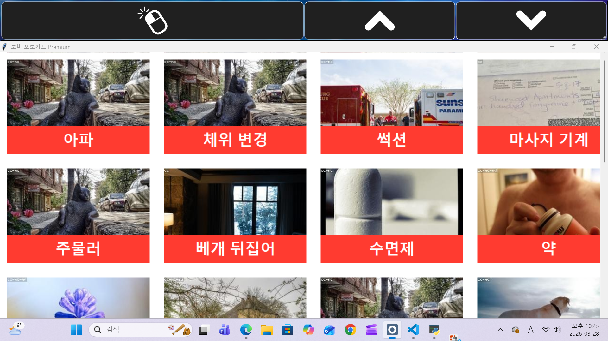

토비 포토카드 Premium
루게릭 환우를 위한 이지 소통 도구
👨👩👧👦 소프트웨어 탄생 배경 (개발자 동기)
이 소프트웨어는 어느 날 예기치 않게 루게릭병이라는 큰 시련을 마주하게 된 저희 어머니를 위해 개발되었습니다. 거동과 의사소통이 점차 어려워지는 어머니를 곁에서 지켜보며, 작게나마 실질적인 도움이 되고자 하는 마음을 담았습니다.
또한, 지금 이 순간에도 어머니와 같이 힘든 투병 생활을 이어가고 계신 모든 루게릭 환우님들과 그 가족분들의 고통과 번거로움을 조금이라도 덜어드리고 싶습니다. 비록 대단한 코드는 아니지만, 필요한 분들에게 도움이 되기를 바라는 간절한 마음으로 이 결과물을 온전히 오픈하여 공유합니다.

[실제 개발 화면: 토비 포토카드 UI]
✨ 핵심 특징 및 장점
1. 옵티키(OptiKey) 커스텀 기반
시선 추적 보조 기기와 함께 사용되는 '옵티키'의 강력한 커스텀 키보드 제작 기능을 기반으로 개발되어, 사용자 정의 XML 구성을 통해 환우에게 최적화된 인터페이스를 제공합니다.
2. 극한의 간결함, 직관적인 사용성
상단 컨트롤 바는 빈번하게 사용되는 단 3개의 핵심 기능(**Left Click, Page Up, Page Down**)으로만 구성되어 있습니다. 복잡성을 제거하여 환우의 피로도를 최소화하고 오작동을 예방합니다.
XML 구성으로 보는 직관적인 설계
실제 사용되는 핵심 기능만을 명확하게 정의하여, XML 코드 자체로도 사용자에게 필요한 기능을 즉시 파악할 수 있도록 설계되었습니다.
<?xml version="1.0" encoding="utf-8"?> <Keyboard> ... <!-- 기본 설정 --> <Content> <DynamicKey> ... <Label>Left Click</Label> ... </DynamicKey> <DynamicKey> ... <Label>Page Up</Label> ... </DynamicKey> <DynamicKey> ... <Label>Page Down</Label> ... </DynamicKey> </Content> </Keyboard>
💻 실제 사용 시나리오 시각화
신체 제약이 있는 환우분이 단 한 번의 움직임이나 시선 집중만으로도 원하는 동작을 어떻게 쉽게 수행할 수 있는지 시각적으로 설명합니다.

[시선 추적 기반의 간결한 상단바 조작 시나리오]